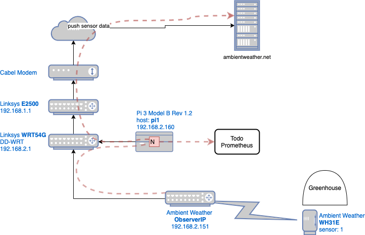
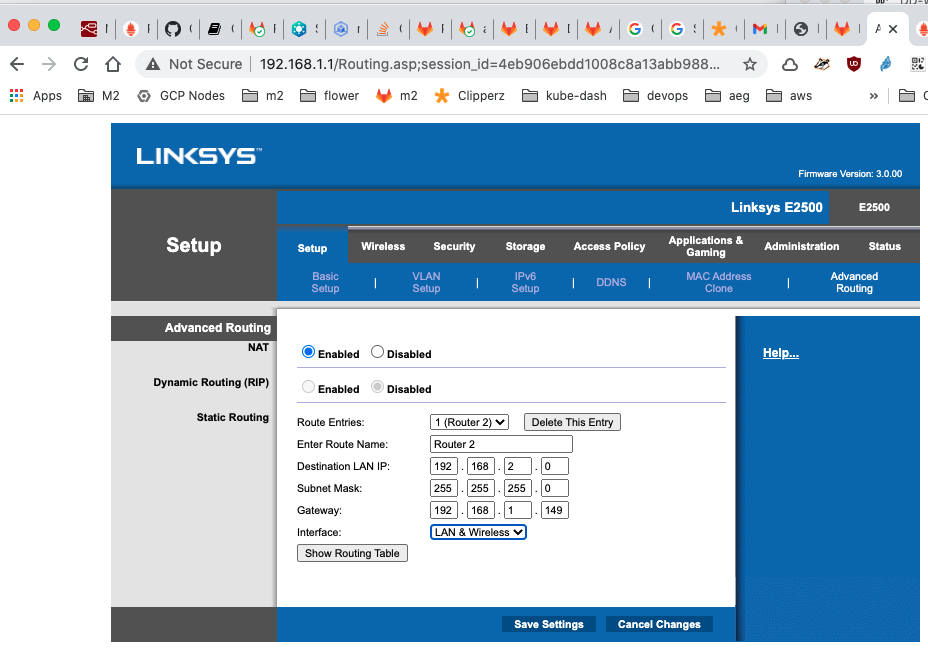

Greenhouse IOT
Temperature Monitoring

The drawing above shows how the sensor data emanating from ObserverIP is intercepted via iptables running on WRT54G and sent to a Node-RED service running on pi1
iptables
An iptables entry is created to intercept traffic from ObserverIP to ambientweather.net. and redirect it Node-RED running on a Raspberry Pi. The gh-flow running on the Pi will act as a tee, sending the data to Prometheus before sending it along to its original target ambientweather.net.
#
# ssh to WRT54G
#
ssh root@192.168.2.1
#
# While on pi1
# redirect traffic from ObserverIP to pi1
#
iptables -t nat -A PREROUTING -s 192.168.2.151 -p tcp --dport 80 -j DNAT --to-destination 192.168.2.160:1880
# Verify
iptables -t nat -L PREROUTING
Pi Setup
Load raspbian lite OS and then set a static IP. For more information see the official doc
raspi-config
Login with the default login pi/raspbery and run rasp-config
raspi-config
- Change the password for the
piuser - Change the hostname to
pi1andpi2 - Enable ssh under "Interface Options"
Static IP address
Configure the eth0 interface statically by editing the /etc/dhcpcd.conf file.
For the hostname pi1:
interface eth0
static ip_address=192.168.2.160/24
static routers=192.168.2.1
static domain_name_servers=192.168.2.1 8.8.8.8
For the hostname pi2:
interface eth0
static ip_address=192.168.2.161/24
static routers=192.168.2.1
static domain_name_servers=192.168.2.1 8.8.8.8
Prometheus
The following is based on this article.
sudo apt update
sudo apt full-upgrade
wget https://github.com/prometheus/prometheus/releases/download/v2.22.0/prometheus-2.22.0.linux-armv7.tar.gz
tar xfz prometheus-2.22.0.linux-armv7.tar.gz
mv prometheus-2.22.0.linux-armv7/ prometheus/
rm prometheus-2.22.0.linux-armv7.tar.gz
Create a service config file
sudo nano /etc/systemd/system/prometheus.service
and edit to look like the following.
[Unit]
Description=Prometheus Server
Documentation=https://prometheus.io/docs/introduction/overview/
After=network-online.target
[Service]
User=pi
Restart=on-failure
ExecStart=/home/pi/prometheus/prometheus \
--config.file=/home/pi/prometheus/prometheus.yml \
--storage.tsdb.path=/home/pi/prometheus/data
[Install]
WantedBy=multi-user.target
Then
sudo systemctl enable prometheus
sudo systemctl start prometheus
sudo systemctl status prometheus
open http://192.168.2.161:9090
Prometheus Push Gateway
This section base on this github page
wget https://github.com/prometheus/pushgateway/releases/download/v1.4.0/pushgateway-1.4.0.linux-armv7.tar.gz
tar xfz pushgateway-1.4.0.linux-armv7.tar.gz
mv pushgateway-1.4.0.linux-armv7/ pushgateway/
rm pushgateway-1.4.0.linux-armv7.tar.gz
Create a service config file
sudo nano /etc/systemd/system/pushgateway.service
and edit to look like the following.
[Unit]
Description=Prometheus Push Gateway
Documentation=https://prometheus.io/docs/introduction/overview/
After=network-online.target
[Service]
User=pi
Restart=on-failure
ExecStart=/home/pi/pushgateway/pushgateway
[Install]
WantedBy=multi-user.target
Then
sudo systemctl enable pushgateway
sudo systemctl start pushgateway
sudo systemctl status pushgateway
The query API allows accessing pushed metrics and build and runtime information.
curl -X GET http://192.168.2.161:9091/api/v1/status | jq
To configure pushgateway as a scrape target in prometheus edit /home/pi/prometheus/prometheus.yml as shown below (must have correct indentation)
...
scrape_configs:
...
- job_name: 'pushgateway'
honor_labels: true
static_configs:
- targets: ['localhost:9091']
...
Then restart
sudo systemctl restart prometheus
Metrics
obff_wh31e_temp1f
The gh-flow will generate a metric similar to the following.
cat <<EOF | curl --data-binary @- http://192.168.2.161:9091/metrics/job/sensor_reading/location/greenhouse
# TYPE obff_wh31e_temp1f gauge
# HELP obff_wh31e_temp1f Greenhouse Tempature
obff_wh31e_temp1f 60.25
- Metric Name: obff_wh31e_temp1f
- Labels:
- job=sensor_reading
- location=greenhouse
Static Routs
This section based on this
on router 1

on router 2
# Allow everything to be forwarded through the router (simple but do not use on routers directly connected to the internet)
iptables -I FORWARD -j ACCEPT
Alert Manager
Setup.
wget https://github.com/prometheus/alertmanager/releases/download/v0.21.0/alertmanager-0.21.0.linux-armv7.tar.gz
tar xfz alertmanager-0.21.0.linux-armv7.tar.gz
mv alertmanager-0.21.0.linux-armv7/ alertmanager/
rm alertmanager-0.21.0.linux-armv7.tar.gz
Create a service config file
sudo vi /etc/systemd/system/alertmanager.service
and edit to look like the following.
[Unit]
Description=Alert Manager
Wants=network-online.target
After=network-online.target
[Service]
Type=simple
User=pi
Group=pi
ExecStart=/home/pi/alertmanager/alertmanager \
--config.file=/home/pi/alertmanager/alertmanager.yml \
--storage.path=/home/pi/alertmanager/data/alertmanager
Restart=always
[Install]
WantedBy=multi-user.target
Configure the alertmanager config
sudo nano /home/pi/alertmanager/alertmanager.yml
and edit to look like the following. See the alertmanager config doc. And here is a good blog
global:
# URL value not shown becaue it contains a token
# to get the URL in slack, click more > apps > Browse Apps > Custom Integrations > Incoming WebHooks
# or go here: https://bagelwarehouse.slack.com/services/1874015307842
slack_api_url: 'https://hooks.slack.com/services/REDACTED/REDACTED/REDACTED'
route:
receiver: 'slack-notifications'
group_by: [alertname, datacenter, app]
receivers:
- name: 'slack-notifications'
slack_configs:
- channel: '#weather-alerts'
send_resolved: true
text: Detail *Temp* `{{ .CommonAnnotations.description }}` {{ range .Alerts -}}{{ range .Labels.SortedPairs }} *{{ .Name }}* `{{ .Value }}`{{ end }}{{ end }}
Then
sudo systemctl enable alertmanager
sudo systemctl start alertmanager
sudo systemctl status alertmanager
open http://192.168.2.161:9093
Now go to the Prometheus server directory and add to the prometheus.yml file and add stuff like this:
alerting:
alert managers:
- static_configs:
- targets:
- "localhost:9093
rule_files:
- "./rules.yml"
And make the rules.yml look like:
groups:
- name: sensors
rules:
- alert: gh-very-cold
expr: round(avg_over_time(obff_wh31e_temp1f [2m])) < 50
annotations:
text: 'Greenhouse is very cold'
description: "{{ $value }}"
- alert: gh-cold
expr: round(avg_over_time(obff_wh31e_temp1f [2m])) < 59
annotations:
text: Greenhouse is cold
description: "{{ $value }}"
- alert: gh-warm
expr: round(avg_over_time(obff_wh31e_temp1f [2m])) > 75
annotations:
text: Greenhouse is warm
description: "{{ $value }}"
- alert: gh-hot
expr: round(avg_over_time(obff_wh31e_temp1f [2m])) > 85
annotations:
text: Greenhouse is hot
description: "{{ $value }}"
- alert: gh-very-hot
expr: round(avg_over_time(obff_wh31e_temp1f [2m])) > 90
annotations:
text: Greenhouse is very hot
description: "{{ $value }}"
If changes are made to the file you need to restart to have them take affect:
vi rules.yml
sudo systemctl restart prometheus
sudo systemctl status prometheus
sudo journalctl --unit=prometheus -f
to debug:
sudo journalctl --unit=alertmanager.service
Bug fix
Do this on pi1 and pi2
sudo vi /etc/avahi/avahi-daemon.conf
# Comment out
# use-ipv6=yes
# set this
deny-interfaces=wlan0
# Then
sudo systemctl restart avahi-daemon